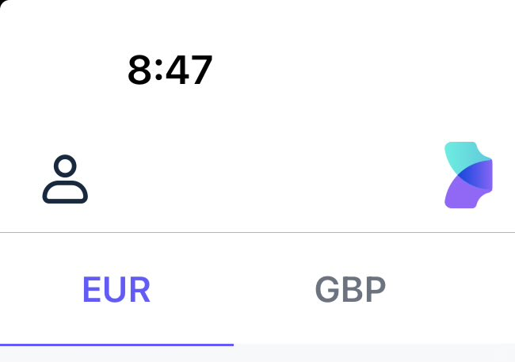
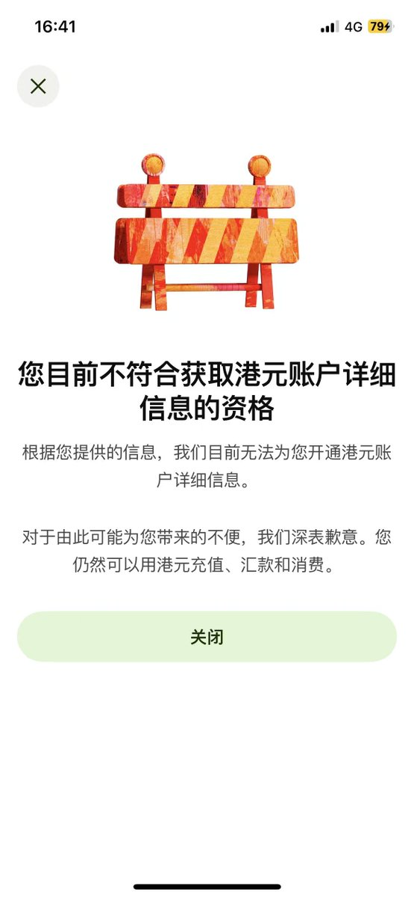

Aoi M
@aoim33
@zhuren1992 @Wise @duel_duck @AIxC_Official @aixcfoundation 都有wise了为什么不用欧元和英镑收


主任|蓝鸟会🕊
@zhuren1992
Wise 又给我上强度了：您目前不符合资格 × 3
港元账户详情遥遥无期，实体卡更是梦里才有。
现在领老马 X 的低保/工资，是不是彻底只能飞香港办实体卡？
有没有通关老司机指条明路？求评论区或私信支招，跪谢 🙏
#Wise @Wise @duel_duck @AIxC_Official @aixcfoundation https://t.co/lD2ONy7NW6